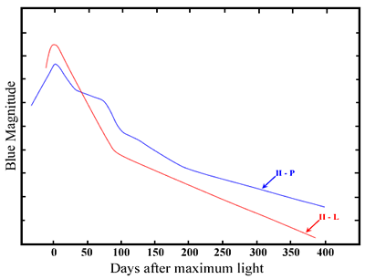
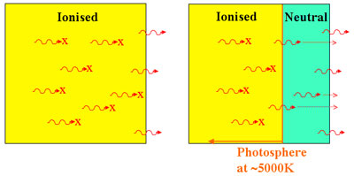
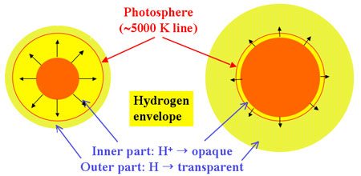

A massive burst of neutrinos is the first evidence that a core-collapse supernova has occured. This is followed a few hours later by the shock wave breaking out of the star and releasing electromagnetic radiation initially as a UV flash. The supernova becomes visible at optical wavelengths as it expands, with the initial rise in the light curve the result of the increasing surface area of the star combined with a relatively slow temperature decrease.

The peak in the light curve occurs as the temperature of the outer layers starts to decrease. At this point, Type II supernovae (SNII) are sub-divided into two classes based on the shape of their light curves. Type II-Linear (SNII-L) supernovae have a fairly rapid, linear decay after maximum light, while Type II-Plateau (SNII-P) supernovae remain bright (on a plateau) for an extended period of time after maximum. The peak brightness of SNII-L are nearly uniform at ~2.5 magnitudes fainter than a Type Ia supernova, however, the peak brightness of SNII-P show a large dispersion, which is almost certainly due to differences in the radii of the progenitors.
The onset of the plateau phase corresponds to a change in opacity in the outer layer of the exploded star. As the shock wave produced by the core-collapse propagates out through the star, it heats the outer envelope of the star to over 100,000 Kelvin ionising all the hydrogen. Ionised hydrogen has a high opacity, so radiation from the inner parts of the star cannot escape, and we can only observe photons from the outermost parts of the star.

After a few weeks, however, the outer parts of the star have cooled sufficiently that the ionised hydrogen is able to recombine to form neutral hydrogen. In core-collapse supernovae, the critical temperature for hydrogen recombination lies between about 4,000 and 6,000 Kelvin. While ionised hydrogen is opaque, neutral hydrogen is transparent at most wavelengths, and this recombination front where the opacity changes is known as the photosphere of the star. Once the hydrogen starts to recombine, photons from the hotter, inner regions of the hydrogen envelope are able to escape and we are able to see deeper into the star.

All the while, the star continues to expand, forcing the photosphere deeper and deeper into the star as successive regions cool to the temperature of recombination. Since this temperature remains essentially constant as the photosphere receeds through the hydrogen envelope, a plateau is created in the light curve.
Obviously the length of the plateau depends on the depth of the hydrogen envelope, but other characteristics of the star are also correlated with the plateau phase. In particular, the luminosity of the plateau is brighter for SNII which produce a lot of nickel, and both of these characteristics are linked with higher explosion energies and ejecta velocities. Although the range of nickel masses created by SNII-P varies by a factor of 10, and there is a 5 magnitude spread in the luminosities of the plateau phase, these correlations allow astronomers to standardise SNII luminosities to ~ 0.3 magnitudes through the spectroscopic measurement of the ejecta velocities. This Standardised Candle Method for SNII provides a distance measure to these objects independent from the Expanding Photosphere Method usually employed with SNII-P.
After the recombination front has passed through the entire hydrogen envelope, the plateau phase (if there is one) ends, and the light curves of SNII drop down onto a radioactive tail. This is powered by the conversion of 56Co into 56Fe and has the same shape for all core-collapse supernovae.
While the above discussion divides SNII into SNII-L and SNII-P based on light curve shape after maximum, it is important to keep in mind that well observed SNII-L are much rarer than their SNII-P counterparts and there remains some controversy as to whether they consititute a distinct class of object. Astronomers think that perhaps the lack of a plateau phase in SNII-L arises simply because SNII-L have a much smaller hydrogen envelope.